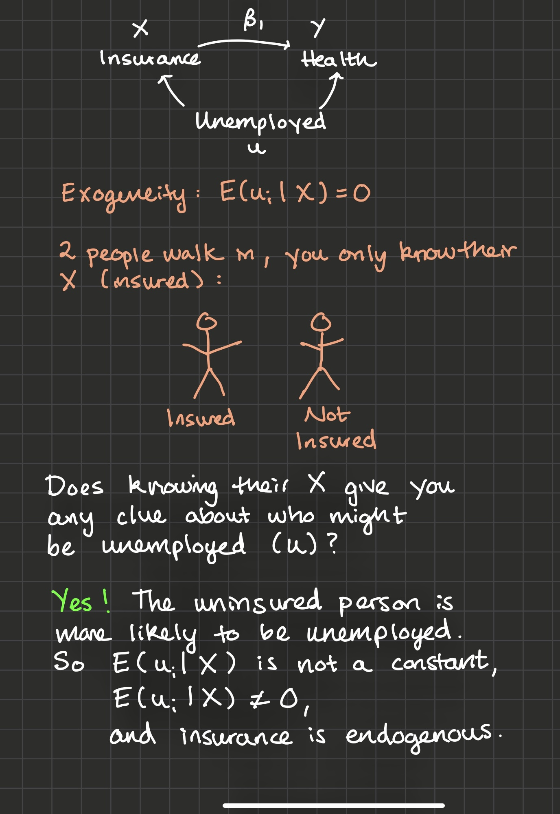
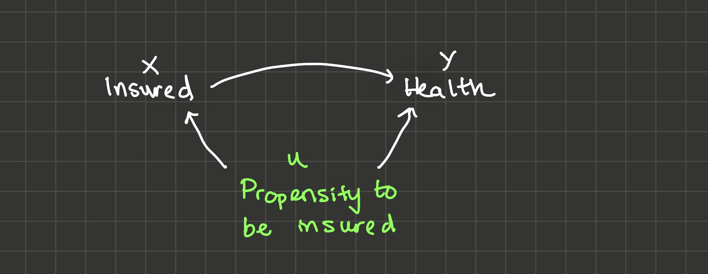

3 Causal Inference
3.1 Overview
In this chapter, we’ll learn how exogeneity makes a causal interpretation of \(\hat{\beta_1}\) possible. We know that correlation does not equal causation, but in this chapter, I’ll explain why correlation + exogeneity equals causation.
In section 3.2, I’ll introduce the fundamental problem of causal inference.
Definition. The Fundamental Problem of Causal Inference: an individual treatment effect can never be identified because two parallel universes can never be observed at the same time. Example: you’ll never know how much your poor sleep effected your performance on an exam you took today because you can never observe your score on the exam in a universe where you got better sleep. The best we can do is to approximate that individual treatment effect with an average treatment effect by running an experiment.
In the absence of parallel universes, you might think that looking at the same person at different times will yield an estimate of the average treatment effect. That is, can you look at all the exams you’ve taken in the past year and the sleep you got the night before those exams, run the regression score ~ sleep, and interpret \(\hat{\beta_1}\) as causal? In section 3.3, I argue that no, omitted variable bias could be a big problem (maybe you got better sleep and scored higher when you were more confident about the material).
In section 3.4, I ask: could you instead compare different people at the same time? That is, take your whole class, ask each person what their score was on the exam, and how much sleep they got the night before. Then run the regression score ~ sleep. Does \(\hat{\beta_1}\) have a causal interpretation then? The answer is still no, there could be selection bias (the students who decided to get more sleep were the ones who were confident they’d get a good score).
Definition. Selection Bias: a type of omitted variable bias where the omitted variable is the person’s propensity to have certain values for X.
In section 3.5, I explain that even if you have data about twins at the exact same time (one twin got poor sleep before the exam; the other twin got good sleep), the interpretation is still not causal because of selection bias. The only way to make sure your \(\hat{\beta_1}\) is causal is to run a randomized controlled trial (RCT).
Definition. Randomized Controlled Trial: a study that assigns participants randomly between control and treatment groups, administers the treatment X, and observes outcome Y.
The chapter ends with section 3.6, which develops the theory of selection bias a little bit more with the Rubin Causal Model.
3.2 Effect of Health Insurance on Health
In the previous video, you calculated \(\hat{\beta_1}\), a measure of the correlation between x and y (recall that \(\hat{\beta_1} = \frac{sCov(x, y)}{sVar(x)})\).
To be sure that we’ve estimated a causal effect with \(\hat{\beta_1}\), we would need to observe you (with health insurance), and measure your health. Then we would need to travel back in time, changing only one thing - your decision to buy health insurance. We would then press fast forward and observe your health in this moment, without health insurance.
We can only see the effects of health insurance by observing people in parallel universes. In one universe, people have decided to buy health insurance. In the other universe, they have not. But we can’t observe two parallel universes at once. This is the fundamental problem of causal inference: how much a variable truly effects a person is fundamentally unknowable because outcomes in two parallel universes can never be observed at the same time.
So what’s the second-best thing? Instead of trying to identify an individual treatment effect, we may be able to identify an average treatment effect: the amount that a treatment X effects some outcome Y for a larger population on average.
How? In this chapter we’ll explore a couple of different possibilities. We’ve ruled out observing the same person at the same time with different levels of insurance because of the fundamental problem of causal inference.
Let’s explore whether \(\hat{\beta_1}\) has a causal interpretation in each of these scenarios:
The same person at different times, where sometimes they have insurance and sometimes they don’t.
Different people at the same time, where some people have insurance and some people don’t.
Twins at the same time, where one twin has health insurance and one twin doesn’t.
3.3 Same person at different times
I’ll tackle 1) first. Suppose you don’t have health insurance between the ages of 26 and 30, and then you do have health insurance between the ages of 30 and 34. In your late 20’s your average health was a 7 and in your late 30’s, your average health was a 8.5. So did having health insurance cause the 1.5 point increase in health?
Maybe, but maybe not: what if you had no health insurance in your late 20s because you were underemployed? And because you didn’t have a fulfilling job, you also found yourself anxious and depressed? But then at 30, you finally landed the job of your dreams, you got health insurance because you were employed full time, and you were much happier and healthier? It could look like health insurance boosted your health, but in reality it was just that you tend to have health insurance at times in your life when you also have steady employment, and you enjoy better health because of your employment.
3.4 Different people at the same time
Can we instead take the average healths of the insured, subtract the average healths of the uninsured, and consider this a causal effect?
Probably not, because just like in the previous paragraph, there’s selection bias: those who have insurance may be different on unobservables from those who don’t. If the uninsured group is more likely to be underemployed (and perhaps more anxious and depressed), again it may look like health insurance makes people healthier, but actually it’s just the effect of steady employment.
You may be wondering: does this have anything to do with exogeneity? Of course it does!

Selection bias is a type of omitted variable bias where the omitted variable is the person’s propensity to get treated (“buy health insurance”). A selection bias diagram: if “propensity to be insured” correlates both with “being insured” and someone’s “health”, then \(\hat{\beta_1}\) is biased.

Clearly, someone’s propensity to be insured correlates with whether they are insured or not. Does “propensity to be insured” correlate with a person’s health? Yes, through multiple channels:
- Stable employment boosts people’s propensity to be insured and their health, as we’ve discussed before
- Careful, responsible people are more likely to be insured and they’re probably healthier because they take care of themselves in other ways as well
- But these variables may be correlated in another way as well: consider a person with a chronic health condition that requires them to frequent the doctor’s office or hospital. They would have a higher propensity to be insured because they know they need to visit the doctor frequently. And they also would have a lower health than a person without such a condition.
All of these are reasons why \(\hat{\beta_1}\) might be biased due to selection.
3.5 Twins at the same time
Finally, let’s consider 3) “Twins at the same time, one of whom has health insurance while the other doesn’t”. If the twin who has health insurance has a health of 9 while the twin that doesn’t has a health of 7, does that mean health insurance boosts people’s healths by 2 points? No: we’re still worried about selection bias. What other things are different between these twins besides the fact that one has health insurance and one doesn’t? But what if we gave out health insurance randomly to one twin, and not to the other? That is, what if we did some kind of randomized experiment on these twins, and then observed their healths after a little while? And what if we got a bunch of twins and did the same thing? This would be one way to find the causal effect of health insurance on health because by randomizing who gets health insurance, we’re enforcing exogeneity. Why?
Imagine the two twins walk in to the room and you’re only told which one has health insurance and which one doesn’t. Does that give you any information about which one might have steadier employment, which one might be more responsible, or which one might have a chronic health condition? No! Because we randomized which of the twins got the insurance. So \[E[unemployed,\ responsible,\ chronic\ condition\ |\ health\ insurance] = 0\] in a randomized experiment, exogeneity holds and \(\hat{\beta_1}\) will be an unbiased estimator of the causal effect of health insurance on health.
And actually we don’t need twins after all: we just need a big group of people who we can divide randomly into a treatment and a control group. As long as the treatment and control groups look enough like each other on average, exogeneity will hold. This is why we say \(correlation + exogeneity = causation\). And this is why a randomized controlled trial (RCT) is the gold standard for causal inference. At the end of this course, we’ll talk about a few second-best approaches for causal inference using instrumental variables and then differences-in-differences, but it’s good to keep in mind that if an experiment is ethical and cost-effective, it’s the best approach.
So what’s the ideal experiment to find the causal effect of some variable X on some variable Y? It’s an RCT where you randomize X and compare average differences in Y between treatment and control groups.
3.6 Quantifying Selection Bias with the Rubin Causal Model
The Rubin Causal Model helps us think a little more rigorously about selection bias. Here it is:
There are two types of people: people that choose to get health insurance and people that don’t. The people who choose to not get health insurance have some health level which we’ll call \(health_{0i}\): the 0 indicates that’s their health in the universe that they are not insured.
Let’s suppose health insurance has some causal effect on a person’s health, and we’ll call that effect \(\tau_i\). Then for the types of people who choose to get health insurance, their health, \(health_{1i}\) is equal to their health if they hadn’t gotten insured plus the treatment effect: \(health_{0i} + \tau_i\). So:
\[health_{1i} = health_{0i} + \tau_i\]
When we estimate the model:
\[health_i = \beta_0 + \beta_1 insurance_i + u_i\]
\(\hat{\beta_1}\) will be the average difference in the insured people’s healths and the uninsured people’s healths:
\[\begin{align*} \hat{\beta_1} = & E[health_{1i}\ |\ type\ of\ people\ who\ get\ insured] - \\ & E[health_{0i}\ |\ type\ of\ people\ who\ don't\ get\ insured] \end{align*}\]
$$$$
And since \(health_{1i} = \tau_i + health_{0i}\),
\[\begin{align*} \hat{\beta_1} = & E[\tau_i + health_{0i}\ |\ type\ of\ people\ who\ get\ insured] - \\ & E[health_{0i}\ |\ type\ of\ people\ who\ don't\ get\ insured] \end{align*}\]
Distributing the expectation across \(\tau_i + health_{0i}\) and recognizing \(E[\tau_i] = \bar{\tau}\):
\[\begin{align*} \hat{\beta_1} = & \bar{\tau} + E[health_{0i}\ |\ type\ of\ people\ who\ get\ insured] - \\ & E[health_{0i}\ |\ type\ of\ people\ who\ don't\ get\ insured] \end{align*}\]
Then define \(selection \ bias\) as:
\[\begin{align*} selection \ bias = & E[health_{0i}\ |\ type\ of\ people\ who\ get\ insured] - \\ & E[health_{0i}\ |\ type\ of\ people\ who\ don't\ get\ insured] \end{align*}\]
That is, selection bias is the average difference in y for the two types of people (people who will choose x = 1 and people who will choose x = 0), insurance level held constant. It actually doesn’t matter if we hold insurance level constant at 0 or at 1: we’ll get the same answer. Finally:
\[\begin{align*} \hat{\beta_1} = \bar{\tau} + selection \ bias \end{align*}\]
Numerical Example: Angrist and Pischke (2014)
3.7 Exercises
Classwork 5: Causal Inference (analytical)
Koans 8-10: ggplot2
3.8 References
Angrist and Pischke (2014) Chapter 1